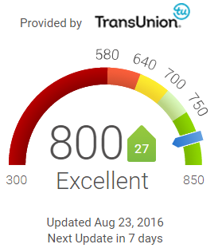

Free Credit Score & Free Credit Reports With Monitoring | Credit Karma
 Credit Cards Shop Credit Cards Balance Transfer Cards Reward Cards Travel Cards Cash Back Cards 0% APR Cards Business Cards Cards for Bad Credit Cards for Fair Credit Secured Cards Search Credit Cards Loans Personal Loans Home Loans Auto Loans Auto Refinance My Loan Get a New Loan Auto Insurance Home Buy a Home Refinance My Loan Home Insurance Real Estate Agents Resources Identity Monitoring Unclaimed Money Reviews Articles Tools Mobile App Blog How it works Tax Savings How it works Help center Log in Sign up for free 1 Credit Cards Shop Credit Cards Balance Transfer Cards Reward Cards Travel Cards Cash Back Cards 0% APR Cards Business Cards Cards for Bad Credit Cards for Fair Credit Secured Cards Search Credit Cards Loans Personal Loans Home Loans Auto Loans Auto Refinance My Loan Get a New Loan Auto Insurance Home Buy a Home Refinance My Loan Home Insurance Real Estate Agents Resources Identity Monitoring Unclaimed Money Reviews Articles Tools Mobile App Blog How it works Tax Savings How it works Help center Sign in Register Screen images simulatedYour credit scores should be free. And now they are.
Check your scores anytime, anywhere, and never pay for it.
See my scores Screen images simulatedA smarter way to find financial products.
Compare personalized offers for credit cards, loans and more without hurting your scores. It’s all on Credit Karma.
Get started Get startedCredit scores and more
1Monitoring
Get alerted when there's an important change on your reports.
2Insights
Learn what affects your credit scores and what you can do to improve them.
3Better Decisions
See personalized recommendations for ways to use your credit more wisely.
Follow the money
Is there unclaimed money in your name?
There's an easy way to find out.
Let's do itWe treat your data as if it was our own
Security
We use 128-bit encryption to protect the transmission of your data to our site.
Privacy
We do not share your personal information with unaffiliated third parties for their own marketing purposes.
It never hurts to check.
Check your credit reports as often as you want, it won't affect your scores.
Show my scores Company Info About Credit Karma Careers Engineering Blog Help Center In The News Security Practices Privacy Policy Terms of Service Popular Offers Best Credit Cards Credit Cards for Bad Credit Credit Cards for Good Credit Balance Transfer Credit Cards Low Interest Credit Cards Rewards Credit Cards Cash Back Credit Cards Secured Credit Cards Personal Loans Auto Insurance Credit Resources Credit and Finance Articles Credit Card Reviews Financial Calculators Credit Karma Blog Notable Links What is a Good Credit Score? Quick Tips for Your Credit Health Free Credit Report Free Credit Monitoring Free Credit Score Credit Scores © 2007–2020 Credit Karma, Inc. Credit Karma® is a registered trademark of Credit Karma, Inc. All Rights Reserved. Product name, logo, brands, and other trademarks featured or referred to within Credit Karma are the property of their respective trademark holders. This site may be compensated through third party advertisers. iPhone is a trademark of Apple Inc., registered in the U.S. and other countries. App Store is a service mark of Apple Inc. Android is a trademark of Google Inc. The Equifax logo is a registered trademark owned by Equifax in the United States and other countries. Credit Karma Mortgage, Inc. NMLS ID# 1588622 | Licenses | NMLS Consumer Access Credit Karma Offers, Inc. NMLS ID# 1628077 | Licenses | NMLS Consumer Access California loans arranged pursuant to Dep't of Business Oversight Finance Lenders License #60DBO-78868. Auto, homeowners, and renters insurance services offered through Credit Karma Insurance Services, LLC (dba Karma Insurance Services, LLC; CA resident license #0172748). Only mortgage activity by Credit Karma Mortgage, Inc., dba Credit Karma is licensed by the State of New York. Credit Karma, Inc. and Credit Karma Offers, Inc. are not registered by the NYS Department of Financial Services. 1 If you receive a larger federal tax refund amount or owe less in federal taxes using the same Tax Return Information when filing an amended return through another online tax preparation service, then you may be eligible to receive the difference in the refund or tax amount owed up to $100 (minimum $25) in the form of a gift card from Credit Karma Tax. For details and eligibility, click here . Average 2018 Federal tax refund displayed in the design is based on data provided by the IRS. Average 2018 State tax refund in CA based on data provided by the CA Department of Revenue. 2 If the IRS and/or applicable state tax authority imposes penalties and/or interest on you due to a Credit Karma Tax calculation error, Credit Karma Tax will reimburse you up to a maximum of $1,000 in the form of gift card(s). For details and eligibility, click here . Credit Karma is committed to ensuring digital accessibility for people with disabilities. We are continually improving the user experience for everyone, and applying the relevant accessibility guidelines. If you have specific questions about the accessibility of this site, or need assistance with using this site, contact us. Please call Member Support at (888) 882-9277 or email legal@creditkarma.com